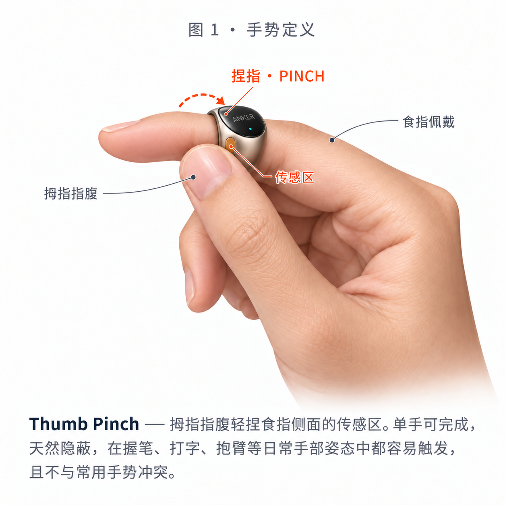

Pinch to Capture. Avenlo is an AI-powered smart ring designed for creative professionals. 用一个自然的轻捏完成灵感捕捉，在记录当下不看屏幕；之后再由 AI 把碎片语音整理成清晰、可继续发展的想法。
点击左侧戒指（或按空格键）模拟轻捏：第一次轻捏开始记录，震动确认；说出想法后再次轻捏结束并保存。捕捉阶段无需查看手机。
「这里是不是可以换成半透明材料？」— 探索外壳的半透明方案，让内部结构成为设计语言的一部分。
Avenlo 戴在食指，拇指轻捏即可触发。第一次轻捏开始录音并短震确认；第二次轻捏结束并双短震确认。交互目标是：捕捉时不看屏幕，尽量不切换注意力。

Thumb Pinch — 拇指指腹轻捏食指侧面的传感区。单手可完成、天然隐蔽，在握笔、打字、抱臂等日常手部姿态中都容易触发，且不与常用手势冲突。
| 参数 | 取值 | 设计意图 |
|---|---|---|
| 捏合保持时长 | ≥ 300 ms | 过滤误触：整理头发、拿杯子等瞬时接触不触发 |
| 触发力度 | 中轻力度窗口 | 指腹「搭上」即可，无需刻意用力 |
| 开始确认 | 轻震 1 次 | 不看屏幕也知道「已经在录了」 |
| 结束方式 | 再次轻捏 | 用与开始一致的手势主动结束，逻辑清晰、状态明确 |
| 单条上限 | 60 秒 | 灵感是短念头而非会议，超时收尾并震动提示 |
| 误触撤销 | 结束后 3 秒内 快速双捏 | 「删掉刚才那条」——不需要掏手机 |
| 含义 | 模式 | 用户心智 |
|---|---|---|
| 开始录音 | 「听到了，请讲」 | |
| 结束并保存 | 「存好了，继续画」 | |
| 撤销成功 | 「那条删掉了」 | |
| 存储失败 | 急促三连 = 出问题，需要看 App | |
| 电量低 | 推迟到下次录音开始时提醒，永不打断当前状态 |
原则：震动只做「确认」，永远不做「打扰」。所有提醒型震动都推迟到下一个捕捉动作的开头。
| 场景 | 设计 |
|---|---|
| 误触（<300 ms） | 直接忽略、无反馈，用户不会察觉 |
| 语音不清 / 环境嘈杂 | 卡片标记「待确认」，原始音频永远保留 |
摘下戒指 → 全状态回到「待机」；缓冲区在蓝牙回连后自动重传。状态机的每个对外跃迁都对应一次震动或一张卡片——用户永远不需要猜「它到底录上没有」。
主流程只保留用户真正能感知的步骤：先在戒指上完成无屏捕捉，之后打开 App 回顾 AI 整理后的想法；需要继续发展时，再主动进入 Explore。
用户只需要完成「轻捏 → 说话 → 再次轻捏」。正常情况下结束后只以震动确认，不要求立即查看手机。
App 默认呈现 AI 整理后的内容，并保留 View original。Related Ideas 只在关联明显时出现；Explore 由用户主动进入。
App 端做三件事：让灵感不再丢失（列表 + 详情），让灵感互相认识（相关想法 + 灵感集），帮灵感迈出第一步（延展思路 + 参考资源）。界面风格与概念海报一致——暖白底、马卡龙标签、陶土棕主色。五屏覆盖预赛演示所需的最小界面集。
今天捕捉了 3 条灵感，其中 1 条与上周的旅行笔记自动关联，已归入「旅行中的灵感」。
从时间、地点、情绪等角度思考：清晨 vs 黄昏的公园声景有何不同？雨天会不会是另一种采集时机？
· 城市声景地图项目案例
· 「环境声音采样」设备评测
· 3 款便携录音器材对比
还有哪些可能性可以探索？把采集到的声音做成可交互的「城市声音明信片」？
交互设计不是画完就结束——这里定义与 Full Stack 的数据接口、给用户研究的验证问题，以及 24 小时黑客松现场的可执行 Demo 方案。
// Ring (Plan A/B) 或模拟器 (Plan C) 上报 { "type": "capture_end", // pinch_start / capture_end / undo "ts": 1726382400123, "audio": "blob://...", // 8–60s 片段 "gestures": [ { "t": 0, "ev": "pinch" }, { "t": 8400, "ev": "pinch" } ] } // AI Pipeline 输出 → App 渲染的 Idea Card（V2.1 新增关联/灵感集字段） { "id": "idea_01h...", "title": "城市公园的声音采集", "summary": "探索城市声景的采集方案…", "transcript": "这片山谷的光线很柔和…", "tags": ["声音", "城市观察"], "status": "ok", // ok / needs_review / queued "related": [ // 第三层：关联的旧灵感 { "id": "idea_01g...", "title": "旅行中的灵感", "relation": "same_collection" } ], "extension": { // 第四层：延展三维度 "perspectives": ["清晨 vs 黄昏的公园声景…"], "references": ["城市声景地图项目案例"], "directions": ["城市声音明信片？"] }, "collection_id": "col_02f...", // 归属的灵感集 "audio_url": "...", "created_at": "2026-09-15T14:32:00+08:00" }
状态机的五个状态与 status 字段一一对应，前端按状态渲染「整理中 / 待确认」。
| # | 验证问题 | 判定标准 |
|---|---|---|
| Q1 | 不看屏幕，能否盲操作完成 Pinch？ | 首次成功率 ≥ 80% |
| Q2 | 日常手部动作的误触率有多高？ | 自然使用 1 天 ≤ 2 次误触 |
| Q3 | 单次轻震是否足以确认「已在录」？ | 主观确定感 ≥ 4/5 |
| Q4 | 睡前 / 创作中是否愿意一直佩戴？ | 佩戴意愿 ≥ 3/5 |
| Q5 | 「Apple Watch 不就行了吗？」 | 抬腕 vs 轻捏的打断感对比访谈 |
Q1–Q3 决定交互参数是否调整（300ms 阈值 / 震动模式），Q4–Q5 输出给 Pitch Story。
保持原 Demo 范围不变，用更直观的产品架构图展示 Pinch → Capture → Organize → App Experience 的链路，并用点线标注每位成员的分工。
食指佩戴，拇指轻捏触发；开始 / 结束录音时以不同震动模式确认状态。
以低打断方式记录即时想法，为后续转写与整理提供原始语音输入。
语音转文字后进行轻整理，输出标题、整理后的想法与少量标签。
在 App 中呈现整理结果，并延伸到关联灵感与后续探索页面。
保留原方案的核心原则：先保证完整体验可展示，再逐步提高硬件完成度。这一版仅将执行表改为架构图表达，其余 03–04 内容保持不变。